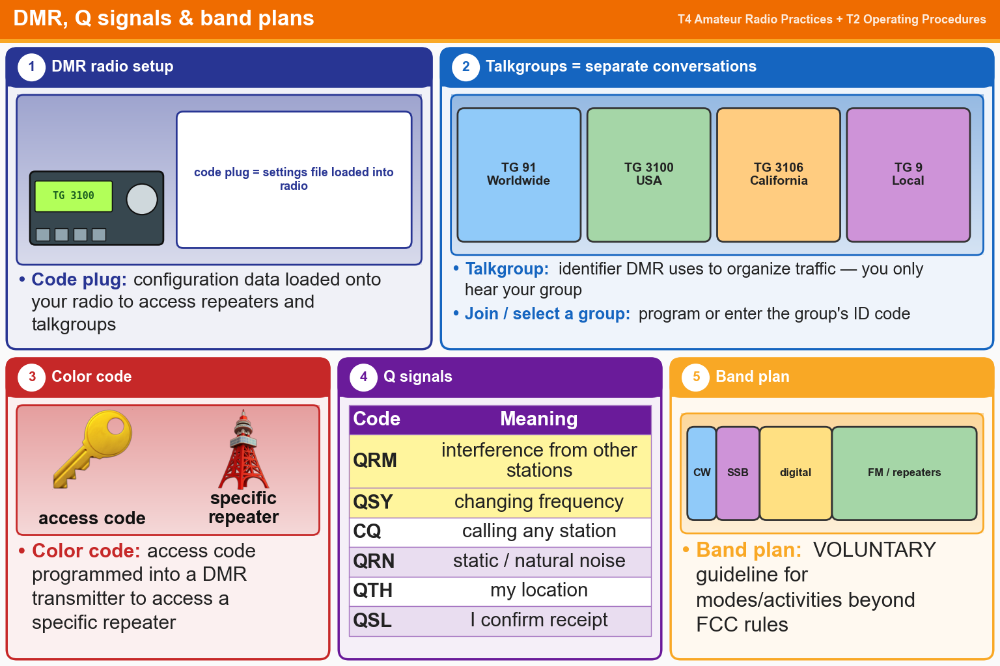

💡 Color code = which repeater. Talkgroup = which conversation. QRM = interference, QSY = change frequency.
Pick an answer for each question, then press Grade at the bottom.
T4B07
What is a DMR “code plug”?
✘A.An adapter cable used to connect a DMR radio to a computer for internet access
✘B.A Coder-Decoder (CODEC) that converts analog voice data to DMR digital data and vice versa
✘C.An upgrade to DMR programming software provided by the radio manufacturer to accommodate new radio models
✔D.Configuration data loaded onto your radio to access repeaters and talkgroups
T2B14
Which of the following is a “talkgroup”?
✔A.An identifier used by DMR to organize radio traffic so that those who want to hear the group aren’t bothered by other radio traffic
✘B.A method of automatically alerting all group members to the frequency where any member is transmitting
✘C.The members of a net organized for amateur radio operators with a specific common interest
✘D.A group of amateur radio operators who share email on a specific amateur radio topic
T2B07
How can you join a digital repeater’s “talkgroup”?
✔A.Program your radio with the group’s ID or code
✘B.Program your radio with the DTMF tone used by the talkgroup
✘C.Register with the local Frequency Coordinator
✘D.Register with the digital repeater control operator
T4B09
How is a specific group of stations selected on a DMR digital voice transceiver?
✘A.By enabling the group’s CTCSS tone
✘B.By inserting a five-pin, pre-programmed code plug
✔C.By entering the group’s identification code
✘D.By retrieving the frequencies from transceiver memory
T2B12
What is the digital color code used on DMR repeater systems?
✔A.An access code which must be programmed into a DMR transmitter to access a specific repeater
✘B.A code which identifies the specific CODEC being used so that the repeater can properly decode the audio
✘C.A code transmitted by the repeater to indicate health and status of the equipment
✘D.A code which automatically programs the repeater offset to a frequency chosen by the user
T2B10
Which Q signal indicates that you are receiving interference from other stations?
✘A.QSB
✔B.QRM
✘C.QRN
✘D.QTH
T2B11
Which Q signal indicates that you are changing frequency?
✘A.QSL
✘B.QRZ
✔C.QSY
✘D.QRU
T2A10
What is a band plan, beyond the privileges established by the FCC?
✘A.A list of available net frequencies
✔B.A voluntary guideline for using different modes or activities within an amateur band
✘C.A plan devised by a club to indicate frequency band usage
✘D.A list of operating schedules